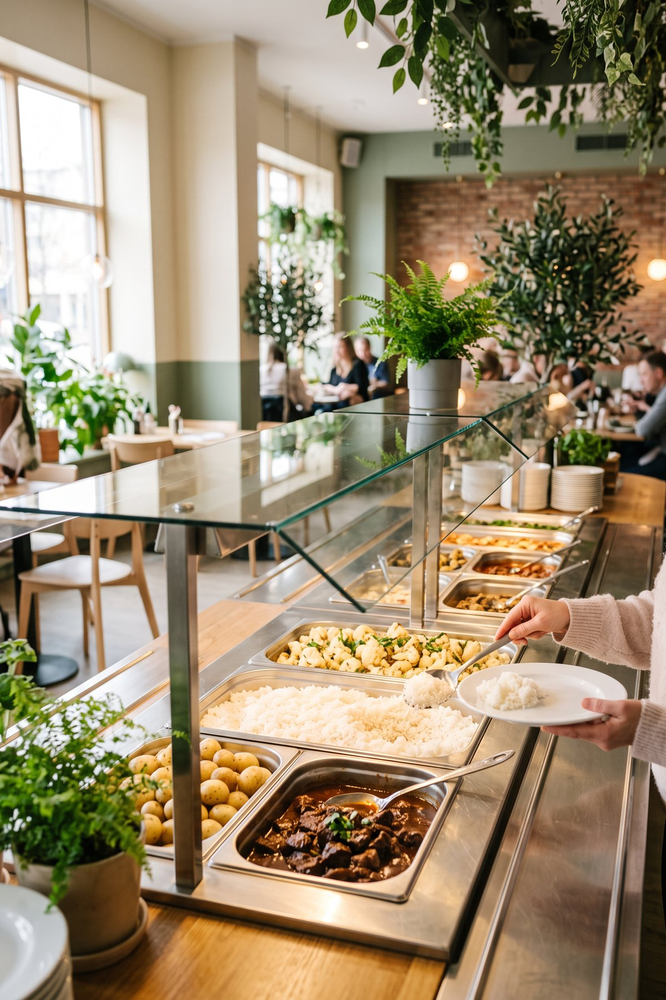
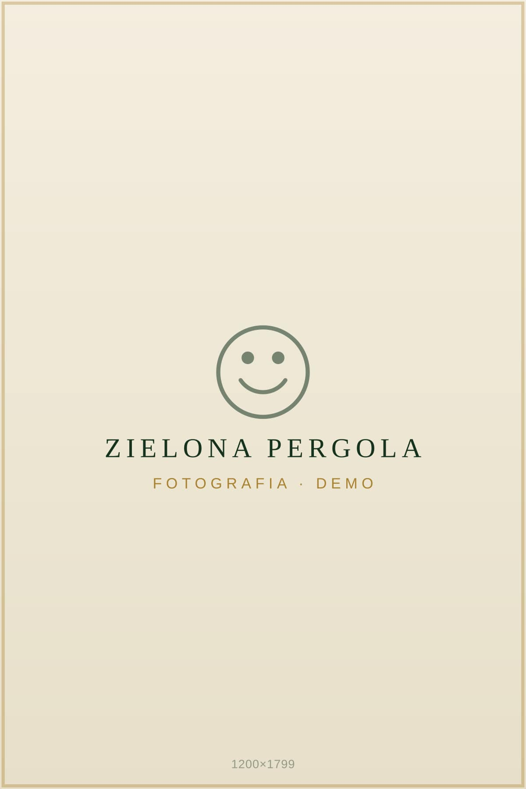
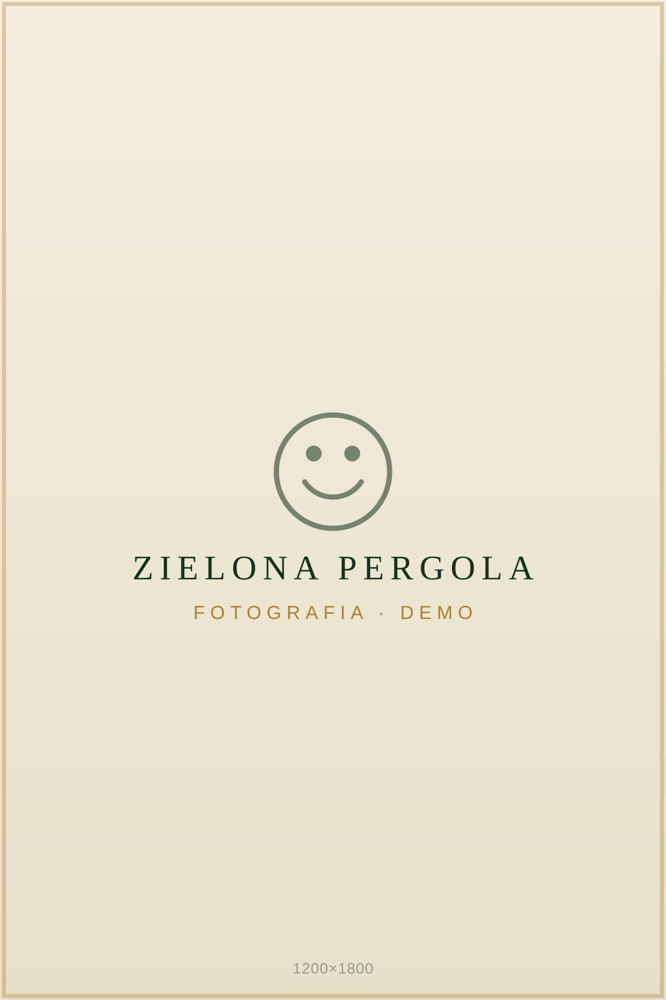
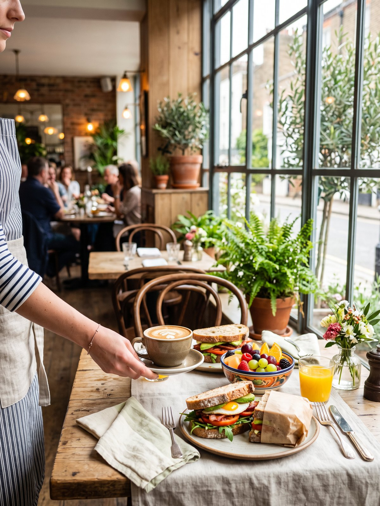
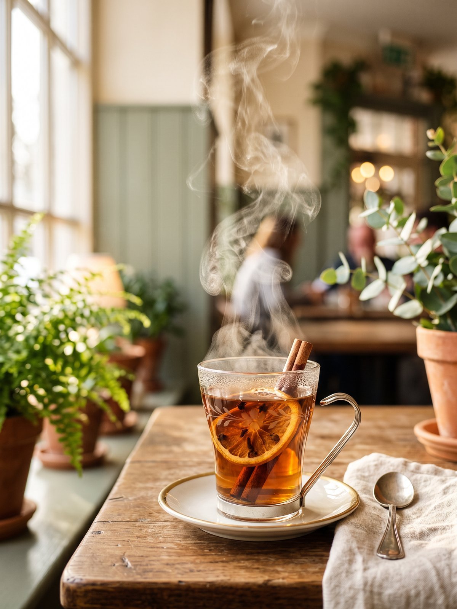
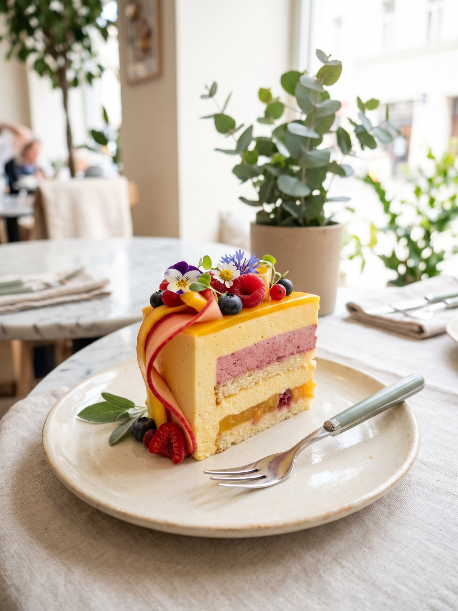

Restaurant — Zielony Gaj
Everyday dining — full of flavour, light and greenery.
A bright, green interior where an everyday lunch feels like a little celebration. Eat in or take away.
Open daily: Mon–Fri 8:00–21:00 · Sat 11:00–22:00 · Sun 11:00–20:00 · ul. Cyprysowa 12
Lunch this week
Lunch menu — for the whole week.
Lunch and the hot buffet counters — Monday to Friday, 11:00–17:00. In the evening (15:00–21:00) we serve the full restaurant menu.
For up-to-date availability of dishes, please confirm by phone.
The restaurant is open daily: Mon–Fri 8:00–21:00, Sat 11:00–22:00, Sun 11:00–20:00.
Today's menu and the latest news are also posted on Facebook. Visit our Facebook
Buffet
Pay-by-weight dishes — take as much as you fancy.
Alongside the lunch menu we run a buffet: help yourself and pay only for what actually lands on your plate. Everything is cooked on site, fresh every day.



- A quick lunch — no waiting to be served, perfect for a work break.
- Sandwiches and salads — made in the morning, ready to grab and go.
- Help yourself — take as much as you fancy.
- Pay by weight — only for what lands on your plate.
- Eat in or take away — we'll pack up any dish for you.
Breakfast
A good start to the day.
We open at 8:00 — for an unhurried breakfast before work or something to take away on your way in. Coffee comes free with every breakfast.
- 8:00–11:00 — breakfast is served from opening, Monday to Friday.
- From our kitchen — thick-cut sourdough bread and eggs done several ways.
- Free coffee — with every breakfast from the menu.

Coffee & tea
For coffee, matcha and something cold.
A break by a window full of greenery — with a cup of something warm or a glass of something refreshing. You don't need to come for lunch to sit down here for a while.

Coffee
Espresso, cappuccino, flat white — and iced coffee on warmer days.
Tea
From the classics to fruit blends.
Matcha
Served hot or iced.
Something cold
Homemade lemonades and kombucha.
Coffee comes free with every breakfast, and the perfect match for your cup is something from the sweet counter — see the section below. You'll find the full choice of coffees and drinks in the planned weekend menu.
Desserts
A sweet finish.
Our sweet counter has a rhythm of its own — something new can appear in it every day. Cheesecakes, cakes and desserts are all made in-house, so the best plan is simply to pop in and pick something to go with your coffee.

- Something different every day — the dessert of the day depends on what came out of the kitchen that morning; ask our team what's in the counter today.
- Perfect with coffee — a sweet partner for a cup from the Coffee & drinks section.
- To take away — we'll box up any dessert for you too.

New sweet treats and behind-the-scenes moments are on our Instagram. See our Instagram
Weekend menu
Weekends at the restaurant.
Saturday 11:00–22:00 · Sunday 11:00–20:00. Pizza and burgers as every day, 11:00–21:00.
Weekend specials and news are announced on Facebook. Check the latest news

The restaurant's weekend menu — Saturday and Sunday.
🌱 — vegetarian option
Every day at Zielona Pergola
Simple, fresh, unhurried.
Every day: lunch, pizza and burgers — eat in or take away.
- Lunch — seasonal Polish and European dishes, prepared on site.
- Pizza — straight from the oven; find out more on the Pizza page
- Burgers — hearty and fresh, also to take away.
- Take away — anything you can eat here, you can take with you too.
Planning a bigger gathering or a party? Take a look at what Pergola Catering offers .
From the kitchen
This is what lunch at Zielona Pergola looks like.
The lunch menu changes every day — always fresh, always home-style. Here's a taste of it:


Life at the restaurant
See what's happening at Zielona Pergola today.
Daily lunches, new desserts, behind-the-scenes moments from the kitchen and our latest reels — all on Facebook and Instagram.
About the restaurant
A place where the day slows down.
The Zielona Pergola restaurant is a light-filled interior full of flowers, greenery and daylight. We cook Polish and European cuisine — simply, seasonally and with a sure touch, from fresh ingredients.
Come for an unhurried lunch, a get-together around the table or a quick meal to take away — whatever suits you. You'll find us in Zielony Gaj, right next to the local business park — a convenient lunch spot for teams from nearby companies too.

Interior & atmosphere
A green orangery.
Plenty of daylight, natural greenery, flowers on the tables and soft, warm evening lamps. An interior designed to make you want to stay longer — for a conversation, a coffee after lunch or an evening around a shared table.


Who it's for
There's a place for everyone at our tables.
For lunch
Quick, fresh and relaxed — on your midday break, on your own or with the team.
With family
A shared table for weekend dinners and small family occasions.
For a meeting
Coffee, conversation over good food, a business meeting in green surroundings.
Location & contact
You'll find us in Zielony Gaj.
Zielona Pergola Restaurant
ul. Cyprysowa 12, 00-000 Zielony Gaj
Open daily: Mon–Fri 8:00–21:00 · Sat 11:00–22:00 · Sun 11:00–20:00
Main phone: 795 870 359
Email: kontakt@zielonapergola.pl (demo address)
Frequently asked questions
Good to know.
- Where is the Zielona Pergola restaurant?
- The Zielona Pergola restaurant is at ul. Cyprysowa 12, 00-000 Zielony Gaj, just a few minutes from Lipów. We're open daily: weekdays 8:00–21:00, Saturday 11:00–22:00, Sunday 11:00–20:00.
- How can I check the current lunch menu?
- We publish the full week's lunch menu on this page in the "Lunch this week" section. For up-to-date availability, it's best to confirm by phone: 795 870 359.
- How can I contact the restaurant?
- The quickest way is by phone: 795 870 359. You can also email us at kontakt@zielonapergola.pl.